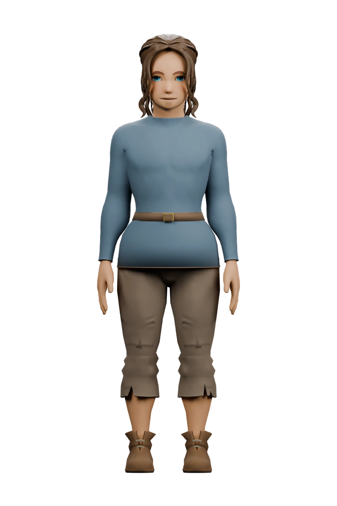

Autonomie
Choix réels, rythme modulable, droit de ne pas jouer.
Participation forcée, récompense qui conditionne chaque action.
Points, quêtes et niveaux peuvent réellement soutenir les apprentissages — mais seulement lorsqu’ils visent un comportement précis et laissent la pédagogie aux commandes. Voici ce que disent les études, comment l’utiliser sans se tromper, et pourquoi nous avons construit Class Odyssey ainsi.
La gamification — ou ludification — consiste à utiliser des éléments de conception de jeux dans des contextes qui ne sont pas des jeux (Deterding, Dixon, Khaled & Nacke, 2011). Dans une classe, cela revient à ajouter des mécaniques familières du jeu — points, niveaux, quêtes, badges, défis, progression visible, coopération — à une activité d’apprentissage qui resterait, sans elles, une activité scolaire ordinaire.
Il ne s’agit donc pas de transformer le cours en jeu complet, ni de « faire plaisir » pour lui-même. L’objectif est plus précis : rendre certains comportements utiles à l’apprentissage plus fréquents — commencer une tâche, pratiquer davantage, persister face à la difficulté, revenir sur ses erreurs, demander un retour, coopérer.
La bonne question n’est pas « comment rendre la leçon plus amusante ? » mais « quel comportement d’apprentissage manque, et quelle mécanique minimale peut le soutenir ? »
Les publications emploient parfois ces termes de façon interchangeable. Une preuve concernant l’un ne prouve pas automatiquement l’efficacité des autres.
Gamification
L’activité reste un apprentissage
On ajoute des éléments de jeu à un cours inchangé : une carte de maîtrise, des défis, des niveaux.
Apprentissage par le jeu
Le jeu porte l’apprentissage
Game-based learning : un jeu complet sert de support, par exemple un jeu de plateau pour les fractions.
Serious game
Le jeu est conçu pour autre chose que jouer
Une simulation conçue d’abord pour former, comme un entraînement clinique ou professionnel.
Les éléments de jeu n’agissent presque jamais directement sur le savoir. Ils modifient d’abord un comportement ou un ressenti, qui influence ensuite l’activité cognitive — et c’est cette activité qui produit l’apprentissage.
Selon la théorie de l’apprentissage gamifié de Landers (2014), le contenu pédagogique agit directement sur l’apprentissage ; les éléments de jeu, eux, agissent en amont.
Conséquence : chaque mécanique doit viser un comportement intermédiaire explicite relié au savoir visé. Un système qui récompense le volume de clics ne garantit ni compréhension ni rétention.
La théorie de l’autodétermination de Ryan & Deci (2000) explique pourquoi la conception compte plus que l’habillage. Une gamification efficace soutient trois besoins fondamentaux ; mal conçue, elle les attaque.
Autonomie
Choix réels, rythme modulable, droit de ne pas jouer.
Participation forcée, récompense qui conditionne chaque action.
Compétence
Défi ajusté, critères clairs, essais multiples, feedback utile.
Difficulté arbitraire, classement qui expose publiquement l’échec.
Appartenance
Coopération, rôles complémentaires, objectif commun.
Rivalité permanente, comparaison sociale, exclusion.
Une récompense n’est pas nuisible en soi : elle le devient lorsqu’elle est vécue comme contrôlante (Deci, Koestner & Ryan, 1999). Un badge qui atteste une compétence informe ; un badge qui sert à faire obéir déplace l’attention de l’apprentissage vers la récompense.
La gamification ne remplace aucune de ces mécanismes : elle peut seulement les soutenir. Les quatre plus solides :
Récupération active
Se tester plutôt que relire. Produire une réponse avant de voir la solution renforce la mémoire à long terme (Roediger & Karpicke, 2006).
Répétition espacée
Revoir à intervalles croissants, surtout ce qui a été raté, plutôt que tout réviser d’un bloc (Cepeda et al., 2006).
Feedback explicatif
Dire où l’on va, où l’on en est et quelle est la prochaine étape (Hattie & Timperley, 2007) : « +100 XP » ne fait rien apprendre.
Charge cognitive maîtrisée
Trop de monnaies, sons, animations et règles détournent l’attention du savoir (Sweller, 1988).
La recherche sur la gamification en éducation repose aujourd’hui sur de nombreuses méta-analyses — des synthèses statistiques de dizaines d’études. Le verdict global est positif, mais conditionnel : l’effet dépend fortement de la qualité de la conception.
Cognition / apprentissage Motivation Performance Estimation très hétérogène
| Étude | Corpus | Effet moyen | Ce qu’il faut retenir |
|---|---|---|---|
| Sailer & Homner (2020) | 19 études cognitives, N = 1 686 | g = 0,49 cognitif 0,36 motivation · 0,25 comportement |
L’estimation la plus fiable : effet petit à moyen sur les résultats cognitifs. |
| Bai, Hew & Huang (2020) | 30 interventions, N = 3 202 | g = 0,50 apprentissage | Effet moyen positif, malgré des interventions très diverses. |
| Li, Hew & Du (2024) | 35 interventions, N = 2 500 | g = 0,26 motivation intrinsèque | La motivation intrinsèque progresse peu : la conception est décisive. |
| Zeng et al. (2024) | 22 études, N = 3 144 | g = 0,78 performance | Effet plus grand, mais contextes très dispersés (hétérogénéité ≈ 94 %). |
| Kurnaz & Koçtürk (2025) | 31 études K-12, N ≈ 2 907 | g = 0,65 motivation | Majorité d’études quasi expérimentales : à considérer avec prudence. |
| Slamet & Meng (2025) | 35 études collaboratives | d = 0,88 cognitif | Bénéfice net lorsque la gamification est intégrée à un travail d’équipe. |
g et d mesurent l’écart moyen entre un groupe gamifié et un groupe témoin, exprimé en écarts-types. Les valeurs prudentes se situent autour de 0,25 à 0,50 : un gain réel, comparable à d’autres interventions pédagogiques efficaces — à condition que l’activité d’apprentissage elle-même soit solide.
En moyenne, la gamification aide. En pratique, elle n’aide que si l’on sait quel comportement on cherche à installer.
La différence tient rarement aux outils : elle tient à ce que le dispositif récompense réellement et à la place qu’il laisse à l’autonomie de l’élève.
Ce qui soutient l’apprentissage
Ce qui peut nuire
Éthique, accessibilité, données
Expliquer la finalité et les règles, distinguer l’obligatoire du facultatif, garantir une alternative à la compétition, ne jamais exposer l’échec, et ne collecter que les données nécessaires à la régulation pédagogique. Viser WCAG 2.2 et les principes de conception universelle (UDL) : information jamais portée par la seule couleur, mouvement désactivable, temps ajustable.
Un ordre volontaire : on choisit la mécanique en dernier, jamais en premier. Elle n’existe que pour soutenir un comportement précis.
Que devra savoir expliquer, rappeler, distinguer, produire ou transférer l’élève ?
Quelle production ou performance montrera que c’est acquis, en dehors du dispositif ludique ?
Récupération, comparaison, explication, résolution, application, création ou coopération.
Commencer, persister, pratiquer, demander un retour, corriger une erreur, espacer les reprises.
Seulement l’élément qui soutient ce comportement — puis vérifier qu’aucun objectif concurrent (vitesse, volume, score) ne prend le dessus.
Enfin, mesurer hors du système : apprentissage immédiat, rétention différée, transfert, et effets différents selon les élèves.
Class Odyssey est l’application que nous avons construite pour appliquer ces principes dans les cours d’anglais de 7P et 8P : une aventure de classe, projetée sur l’écran, où chaque élève fait grandir un héros à son nom.
L’application transforme la progression en anglais en aventure collective. Chaque élève possède un personnage nominatif qui gagne de l’expérience, monte de niveau et débloque des éléments visuels au fil de l’année. L’effort — devoirs faits, vocabulaire appris — devient visible et partageable, sans ralentir la conduite du cours.
Parce qu’elle rend concrètes les conditions qui, dans la recherche, font la différence : progression personnelle, feedback immédiat, autonomie, coopération et récompenses qui informent plutôt qu’elles ne contrôlent. Le jeu n’est pas une récompense plaquée sur le cours : il donne une forme lisible à ce que les élèves accomplissent déjà.

Mila
Éclaireur
620 XP avant le niveau 4
Progression comparée à soi-même
XP et niveaux individuels, affichés côte à côte : on se mesure à son propre parcours, pas au rang des autres.
Feedback immédiat et lisible
La console enseignant attribue XP, PV ou pièces en quelques secondes, pendant que le cours continue.
Autonomie
Chaque élève choisit et personnalise son héros : tenue, titre, coiffure, couleurs, achetés avec ses pièces.
Compétence visible
Les paliers de niveau débloquent équipements et titres : la progression se voit sans être décrétée.
Coopération
Des récompenses peuvent viser toute la classe, et les soins se donnent collectivement quand le groupe avance.
Priorité à l’apprentissage
L’XP récompense les devoirs et le vocabulaire — l’effort d’apprentissage, jamais la simple présence.
Garde-fous
Règles de classe affichées, aucun classement public permanent, aucune pénalité de série, interface lisible en projection.
Prêt à faire de chaque leçon une aventure ?
Créez votre classe, ajoutez vos élèves et lancez la première quête. L’accès est gratuit pendant la bêta.
Non. Les points et les badges ne sont qu’une surface. Ce qui compte, c’est le comportement qu’ils rendent plus fréquent et le lien entre ce comportement et l’apprentissage visé. Sans ce lien, ils décorent sans aider.
Pas de la même façon. L’effet moyen est positif, mais très variable selon le contexte. Les élèves déjà performants réagissent parfois mieux aux classements, tandis que ces mêmes classements peuvent démobiliser les autres. D’où la préférence pour des comparaisons avec soi-même et des mécaniques facultatives.
Une gamification utile peut être minimale : une carte de maîtrise, un défi court, un feedback clair. Class Odyssey est conçue pour s’intégrer au cours sans le ralentir : les récompenses s’attribuent en quelques secondes depuis la console enseignant.
Non, et ils sont souvent contre-productifs. Ils ajoutent de la comparaison sociale et exposent les élèves les plus fragiles. Une progression privée, ou comparée à son propre passé, obtient de meilleurs résultats relationnels.
L’application est pensée pour l’anglais en 7P–8P, et ses mécaniques (XP, niveaux, héros, pièces) se transposent facilement à d’autres disciplines. La règle reste la même : adapter l’activité d’abord, choisir la mécanique ensuite.
Non. Class Odyssey est un outil de classe, projeté sur l’écran. Les élèves gagnent de l’expérience en faisant leurs devoirs et en apprenant le vocabulaire : l’application rend cet effort visible, elle ne le remplace pas.
Synthèse documentaire arrêtée au 17 septembre 2026, privilégiant les méta-analyses et revues systématiques. Les résultats agrégés ne doivent pas être combinés entre eux : corpus, comparateurs et mesures diffèrent.
Comment citer cette page : Class Odyssey — La gamification en classe : ce que dit la science, 2026.